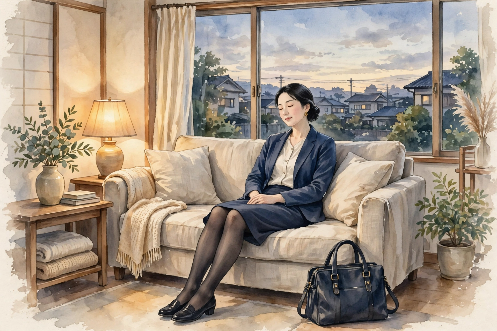

芦屋で仕事帰りに気になる疲労感｜要因の整理とセルフケア、受診の目安

「仕事中はなんとか集中できていたのに、帰りの電車に乗った途端、どっと疲れが出る」「家に着いたらソファからしばらく動けない」——そんな仕事帰りの疲労感を感じる方はいませんか。一日を終えた夕方から帰宅後にかけて表れる重さは、夕食の支度や翌日の準備にも影響しやすく、気になるものです。この記事では、仕事帰り・夕方の帰宅後に感じやすい疲労感の一般的な解説と、仕事中の姿勢や緊張の続き方、通勤や帰宅後の過ごし方、睡眠など考えられる要因の整理、仕事帰りと帰宅後に取り入れられるセルフケア、受診の目安をまとめました。
仕事帰りの疲労感とは — 夕方から帰宅後に表れやすい感覚
疲労感は特定の病名ではなく、体や頭の重さ、だるさ、やる気の出にくさとして感じられる感覚をまとめて表す日常的な言葉です。仕事帰りに表れやすいとされる疲労感には、たとえば次のようなものがあります。
- 仕事を終えた途端、気が抜けたように体の重さを強く感じる
- 帰りの電車や車の中で、頭がぼんやりして考えがまとまりにくい
- 帰宅した直後はソファや椅子からしばらく動きたくなくなる
- 夕食の支度や片付けをする気力が残っていないように感じる
- 肩や首、目の重さと一緒に、全身のだるさも重なって感じる
- 夕方にどっと疲れが出ても、夜更かしが続くと翌朝にも重さが残る
疲労感そのものは、一日の活動が続いたあとの自然な感覚として表れることもあります。ただし、「仕事帰りに限って強く出る」「帰宅後の過ごし方で翌日の感覚まで変わる」という出方には、仕事中の過ごし方と帰宅後の過ごし方の両方が関係している場合があります。まずは、疲労感が夕方のどのタイミングで強く出て、帰宅後にどう変わるのかを振り返ってみることが、自分のリズムを知る手がかりになります。疲労感全般の整理については、コラム「芦屋で気になる全身の疲労感｜要因の整理とセルフケア、受診の目安」もあわせてご覧ください。
考えられる要因
仕事帰りに疲労感が気になりやすくなる背景は、ひとつとは限らず、いくつかの要因が重なっている場合もあります。ここでは一般的に挙げられるものを整理しますが、特定の原因を断定するものではありません。
- 緊張の続き方と、そのゆるみ：仕事中は集中や緊張が続いて疲れを意識しにくく、仕事を終えて緊張がゆるむ夕方になってから、一日の疲れをまとめて感じやすくなることがあるとされること
- 同じ姿勢の続き方：デスクワークや立ち仕事など、仕事中の姿勢が長時間続くこと。肩や首、腰まわりが動かないまま固まりやすく、その重さが疲労感と重なって感じられやすいこと。場面ごとの整理は、コラム「芦屋でデスクワーク後に気になる肩こり｜要因の整理とセルフケア、受診の目安」でもまとめています
- 画面を見る時間の長さ：パソコンやスマートフォンを長く見続ける仕事では、目の疲れ感や頭の重さが夕方に重なりやすく、全身のだるさとして意識されやすいこと
- 通勤の負担：電車や車での移動、乗り換えや駅からの歩行、荷物の重さなど、帰宅までの移動そのものが夕方の体に重なって感じられやすいこと
- 帰宅後の切り替えの難しさ：帰宅後すぐに家事や家族の用事が続き、座って一息つく時間が取れないまま夜が進むと、休んだ実感が得にくくなること
- 夕食と夜の過ごし方：帰宅が遅くなって夕食の時刻がずれ込む、眠る直前まで画面を見続ける、入浴をシャワーで済ませる日が続くなど、夜の過ごし方が翌日への持ち越しにも関わりやすいこと
- 睡眠と前日までの積み重ね：睡眠時間が短い日や、疲れが残ったままの日が続くと、仕事帰りの疲労感が強く出やすくなること。自律神経のゆらぎ感については、コラム「芦屋で気になる自律神経の乱れ感｜ストレスと日常の整え方、受診の目安」でも整理しています
なかには、睡眠の質そのものの問題や、貧血、甲状腺の働き、血圧や服用中の薬などが背景に関係している場合もあります。「忙しい時期だから当然だろう」と決めつけず、休んでも続く場合や、他の症状をともなう場合は医療機関で確認することが大切です（受診の目安は後述します）。
セルフケア — 仕事帰りと帰宅後に取り入れられる工夫
仕事帰りのセルフケアは、帰宅までの移動時間と、帰宅してからの過ごし方の両方に置き場所があります。試しやすいものを挙げます。
- 仕事の合間に姿勢を変える時間をつくる：夕方の疲れをため込みすぎないために、日中も1時間に一度は立ち上がり、肩を回したり両腕を上げて伸びをしたりする時間をはさみます。無理のない範囲で行います。
- 帰宅の途中は画面から目を離す：帰りの電車では、スマートフォンから目を離して遠くを見る、目を閉じてひと息つくなど、仕事の画面時間から一度離れる時間をつくります。
- 帰宅直後に短い休息をはさむ：家に着いたら、家事を始める前に10分ほど座って温かい飲み物を取るなど、一日の区切りになる短い休息を先に置きます。長く横になりすぎると夜の眠りにも影響しやすいため、短めにとどめます。
- 着替えと洗顔で切り替えをつくる：帰宅後に仕事着から部屋着へ着替える、顔を洗うといった小さな区切りは、仕事の緊張から夜の過ごし方へ移る手がかりになります。
- 湯船にゆっくり浸かる：夕方に冷えた日や緊張が続いた日は、シャワーだけで済ませず湯船に浸かる時間をつくると、一日の終わりに体全体を温める機会になります。のぼせに注意し、無理のない長さで行います。
- 夕食と夜の時間を大きく遅らせない：帰宅が遅い日ほど、夕食の量や時刻、眠る直前の画面時間が翌朝の感覚にも関わります。就寝の目安時間を決めておくのも一つの方法です。寝つきそのものが気になる方については、コラム「芦屋で夜に気になる寝つき｜夜の過ごし方と受診の目安」もご覧ください。
- 疲れの出方を簡単に記録する：「残業の日は帰宅後に動けない」「湯船に浸かった日は翌朝が軽い」など、仕事の内容と帰宅後の過ごし方、翌朝の感覚を手帳などに書き留めると、自分に合う整え方が見えやすくなります。週末の場面に絞った整理は、コラム「芦屋で週末に整えたい疲労感｜休みの日の過ごし方とセルフケア、受診の目安」でもまとめています。
大切なのは、帰宅後の過ごし方を一度に全部変えようとしないことです。帰宅直後の短い休息、湯船に浸かるといった工夫ひとつから試し、自分の生活に合うものを少しずつ残してみてください。
受診の目安
次のような場合は、内科など医療機関への相談を検討してみてください。
- 十分に休んでも疲労感が数週間以上続き、少しずつ強くなっている
- 日中も強い眠気が続き、仕事や家事、運転などに支障が出ている
- いびきが大きい、睡眠中の呼吸の乱れを家族から指摘される
- 発熱や体重の変化、動悸、息苦しさなどをともなう
- 気分の落ち込みや意欲の低下、不安感が続いている
- 頭の重さやめまい、しびれなど、他の症状も一緒に表れる
- 仕事帰りだけでなく朝から疲労感が強く、日常生活に支障が出ている
こうした症状の背景には、過ごし方の工夫だけでは整理しきれない要因が関係していることもあります。セルフケアは日常の工夫として位置づけ、気になる症状が続くときは我慢しすぎず、医療機関で確認しておくと安心です。
ステラベガのご案内 — 仕事帰りの夕方に、体を休める時間を
ステラベガは、芦屋市内にある女性専用のプライベートサロンです。施術歴30年のセラピストが、オイルマッサージと美容整体を組み合わせた90分コース（10,000円・税込）をご提供しています。営業は月曜〜土曜の17:00〜22:00（日曜休み）、完全予約制で、詳しい住所はご予約確定後にご案内します。完全個室ですので、人目を気にせずゆっくりとお過ごしいただけます。夕方からの営業時間ですので、仕事帰りの時間帯にも組み込んでいただける時間帯です。シャワー設備のご利用については、ご利用施設により異なります。ご希望の場合はご予約時にお問い合わせください。
当サロンのお悩み別ガイドでは、体の重さや疲れに関するお悩みを取り上げており、施術の流れをご案内しています。施術ではカウンセリングでその日の体調や気になることをうかがい、圧の強さも都度調整します。精油は体調とお好みに合わせてブレンドします。施術後の過ごし方や、ご自宅で続けられるセルフケアについても、施術後にご説明します。なお、近日開院予定のため、ご予約の受付はまだ開始していません。受付開始はこのページでご案内します。料金や営業時間の詳細は料金・営業時間のページでご確認ください。
なお、当サロンの施術はリラクゼーションと美容を目的としたもので、医療行為ではありません。疲労感に対する効果を保証するものでもありません。気になる症状がある場合は、まず医療機関へご相談ください。